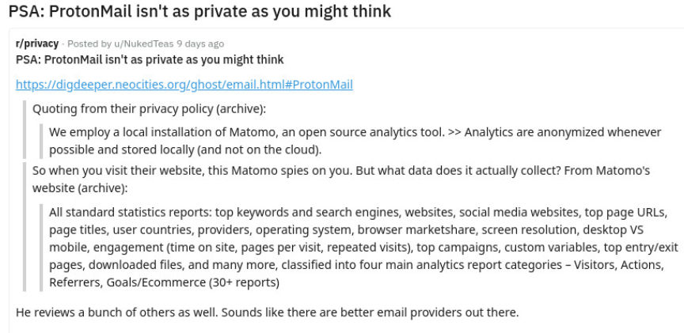
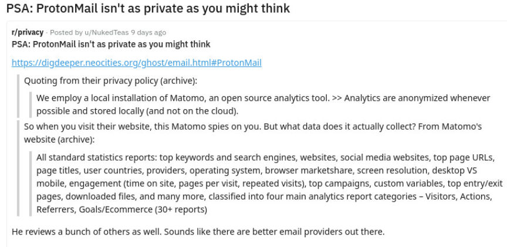

ProtonMail's Updated Transparency Report Changes Nothing
~4 min read | Published on 2019-08-29, tagged General-News using 884 words.
ProtonMail, “the world’s largest secure email provider,” recently updated their transparency report to include some of the latest requests for information from law enforcement across the world. The company also added a statement about complying with court orders prior to officially receiving said orders. This concerned some members of privacy communities on Reddit.
The most recent update to their Transparency Report added an entry to their list of special or significant interactions with law enforcement as well. ProtonMail only updates the Transparency Report when the company receives a request that requires a deviation from the SOP, requests challenged by ProtonMail, and “requests which are not the usual fraud, extortion, ransomware, and anonymous threats cases.”
The August update added a single request:
In July 2019, we received a request for information that was approved by the Swiss judiciary involving a case in another EU country, which upon further assessment, we suspect could be targeting a whistleblower. We have refused to hand over data while seeking further clarification from the authorities as to why this request for information was approved in the first place, and asking for Swiss authorities to re-check the facts of the case.

In response to concerns raised on Reddit by genuinely concerned Redditors and/or individuals looking to “expose” ProtonMail, the company added the following update on August 29:
Due to some confusion from the information previously provided below, we are editing to clarify that we only provide information when ordered to do so by Swiss authorities. Previously, there was confusion arising from the fact that we sometimes comply with orders before we have been officially served with the order via registered post, in cases where we are informed in advance that the order has already been approved.
ProtonMail complied with requests before being formally served with the requests in very few instances (according to the transparency report). One of the examples included the Chloe Ayling case wherein her (then) suspected kidnapper had publicly released his ProtonMail email address and associated it with the (then) suspected kidnapping. Herba–Ayling’s kidnapper–created a hidden service for the “Black Death Group,” a fictional human trafficking organization from Herba’s own imagination. The hidden service had a picture of Ayling on the floor with her measurements, a price, and his email address.
Here is what ProtonMail wrote about the Chloe Ayling case:
In July 2017, we received a request for assistance from British police in the case of the kidnapping of Chloe Ayling. In light of the fact that we were able to verify that the kidnappers were, in fact, using a ProtonMail account, and the fact that the first 48 hours are the most critical in kidnapping cases, we rendered assistance to law enforcement before the signed order was delivered to us, but with the understanding that the court order was in the process of being sent. We delayed disclosure on our transparency report at the request of police until the victim was successfully rescued.
Update: The court order was indeed received soon after we rendered assistance.
The majority of the recent posts and comments on Reddit seem focused on a single line about the tracking of I.P. addresses
ProtonMail may also be obligated to monitor the IP addresses which are being used to access the ProtonMail accounts which are engaged in criminal activities.
That line, surprisingly enough, first appeared all the way back in May 2019. (The transparency reported was updated with the line about I.P. tracking at some point between May 14 and May 16, 2019.) ProtonMail seemingly updated the line without announcing the update and users seemingly failed to notice the change until the most recent string of posts on Reddit.
The Transparency Report is not ProtonMail’s Privacy Policy, though. And updates to the Transparency Report are not updates to the Privacy Policy. The Transparency Report contains the company’s “legal requirements under Swiss law, as defined by the Swiss government,” a ProtonMail spokesperson wrote in a comment on Reddit.
The company’s Privacy Policy very clearly states their position on I.P. logging:
By default, ProtonMail does not keep permanent IP logs. However, IP logs may be kept temporarily to combat abuse and fraud, and your IP address may be retained permanently if you are engaged in activities that breach our terms and conditions (spamming, DDoS attacks against ProtonMail infrastructure, brute force attacks, etc). The legal basis of this processing is our legitimate interest to protect our service against nefarious activities.
Your login IP address is also kept permanently (until you delete it) if you enable authentication logging for your account (by default this is off). The legal basis of this processing is consent, and you are free to opt-in or opt-out at any time in the security panel of your ProtonMail account.
With proper security, ProtonMail users could theoretically access their accounts while under investigation and remain anonymous. Since ProtonMail literally can not hand over the contents of encrypted emails, the data they can hand over to law enforcement is limited. Note that email subjects are not encrypted.
The Transparency Policy update did not make the service any less safe than it was before the update. It changed nothing as far as we know. And even if it had changed something, ProtonMail is still anonymously accessible over their onion service.
ProtonMail is available over Tor here: protonirockerxow.onion
The most recent update to their Transparency Report added an entry to their list of special or significant interactions with law enforcement as well. ProtonMail only updates the Transparency Report when the company receives a request that requires a deviation from the SOP, requests challenged by ProtonMail, and “requests which are not the usual fraud, extortion, ransomware, and anonymous threats cases.”
The August update added a single request:
In July 2019, we received a request for information that was approved by the Swiss judiciary involving a case in another EU country, which upon further assessment, we suspect could be targeting a whistleblower. We have refused to hand over data while seeking further clarification from the authorities as to why this request for information was approved in the first place, and asking for Swiss authorities to re-check the facts of the case.

One of Several Reddit Posts About ProtonMail's (Almost Non-Existent) Logging Policy
In response to concerns raised on Reddit by genuinely concerned Redditors and/or individuals looking to “expose” ProtonMail, the company added the following update on August 29:
Due to some confusion from the information previously provided below, we are editing to clarify that we only provide information when ordered to do so by Swiss authorities. Previously, there was confusion arising from the fact that we sometimes comply with orders before we have been officially served with the order via registered post, in cases where we are informed in advance that the order has already been approved.
ProtonMail complied with requests before being formally served with the requests in very few instances (according to the transparency report). One of the examples included the Chloe Ayling case wherein her (then) suspected kidnapper had publicly released his ProtonMail email address and associated it with the (then) suspected kidnapping. Herba–Ayling’s kidnapper–created a hidden service for the “Black Death Group,” a fictional human trafficking organization from Herba’s own imagination. The hidden service had a picture of Ayling on the floor with her measurements, a price, and his email address.
Here is what ProtonMail wrote about the Chloe Ayling case:
In July 2017, we received a request for assistance from British police in the case of the kidnapping of Chloe Ayling. In light of the fact that we were able to verify that the kidnappers were, in fact, using a ProtonMail account, and the fact that the first 48 hours are the most critical in kidnapping cases, we rendered assistance to law enforcement before the signed order was delivered to us, but with the understanding that the court order was in the process of being sent. We delayed disclosure on our transparency report at the request of police until the victim was successfully rescued.
Update: The court order was indeed received soon after we rendered assistance.
A Page with the Black Death Group's Contact Info
The majority of the recent posts and comments on Reddit seem focused on a single line about the tracking of I.P. addresses
ProtonMail may also be obligated to monitor the IP addresses which are being used to access the ProtonMail accounts which are engaged in criminal activities.
That line, surprisingly enough, first appeared all the way back in May 2019. (The transparency reported was updated with the line about I.P. tracking at some point between May 14 and May 16, 2019.) ProtonMail seemingly updated the line without announcing the update and users seemingly failed to notice the change until the most recent string of posts on Reddit.
The Transparency Report is not ProtonMail’s Privacy Policy, though. And updates to the Transparency Report are not updates to the Privacy Policy. The Transparency Report contains the company’s “legal requirements under Swiss law, as defined by the Swiss government,” a ProtonMail spokesperson wrote in a comment on Reddit.
The company’s Privacy Policy very clearly states their position on I.P. logging:
By default, ProtonMail does not keep permanent IP logs. However, IP logs may be kept temporarily to combat abuse and fraud, and your IP address may be retained permanently if you are engaged in activities that breach our terms and conditions (spamming, DDoS attacks against ProtonMail infrastructure, brute force attacks, etc). The legal basis of this processing is our legitimate interest to protect our service against nefarious activities.
Your login IP address is also kept permanently (until you delete it) if you enable authentication logging for your account (by default this is off). The legal basis of this processing is consent, and you are free to opt-in or opt-out at any time in the security panel of your ProtonMail account.
With proper security, ProtonMail users could theoretically access their accounts while under investigation and remain anonymous. Since ProtonMail literally can not hand over the contents of encrypted emails, the data they can hand over to law enforcement is limited. Note that email subjects are not encrypted.
The Transparency Policy update did not make the service any less safe than it was before the update. It changed nothing as far as we know. And even if it had changed something, ProtonMail is still anonymously accessible over their onion service.
ProtonMail is available over Tor here: protonirockerxow.onion